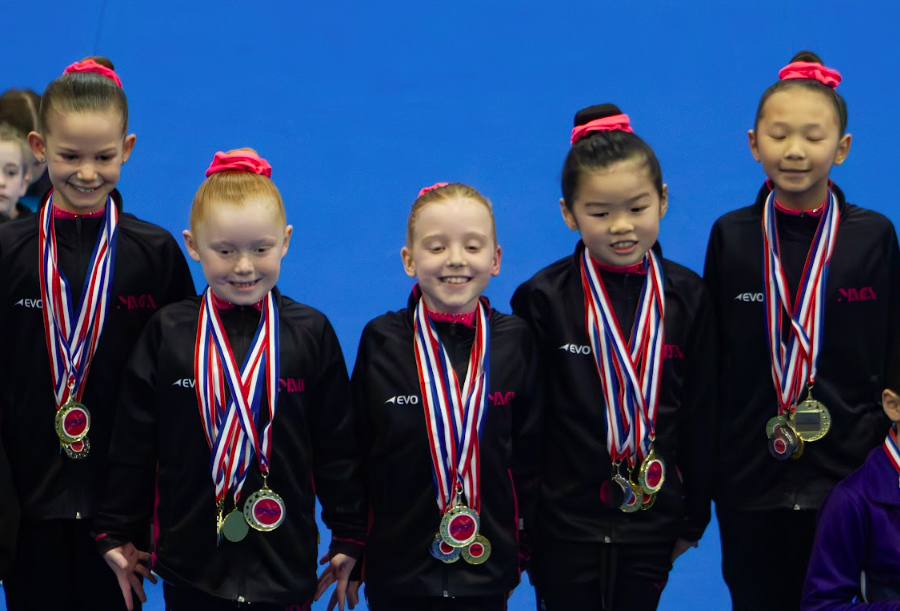

Knox WAG Junior Invitational 2026: Indiana Beach Edges Vivienne Soldo by 0.05 as MAGA's Depth Carries the Team Results
Home favourites sweep the Level 7 Division 1 podium, MAGA banks six of the weekend's sixteen team titles on the back of a Niddrie sweep the week before, and three athletes turn last year's rock-bottom finishes into wins
TL;DR
Knox Gym Club hosted its WAG Junior Invitational over the weekend of 18-19 July, drawing 20 clubs across Levels 3 to 7. The tightest margin of the weekend came in Level 5 Division 2, where Indiana Beach (Cheltenham Youth Club) edged Vivienne Soldo (Essendon Keilor Gym Academy) by just 0.05. On its own floor, Knox went 1-2-3 in Level 7 Division 1 through Lara Thorn, Saisha Bowman, and Emma Curlis, plus the team title. Melbourne Acrobatic Gymnastics Academy (MAGA) won six of the weekend's sixteen team titles, more than double any other club, continuing a run that included a Level 4 team sweep at the Niddrie Invitational the week before, results Gymnastics Victoria still hasn't officially released. Niah Vanzin, Chelsea Hassell, and Chloe Baker all turned rock-bottom finishes from earlier in the season into Knox wins.
Knox Gym Club hosted its WAG Junior Invitational over the weekend of 18-19 July, drawing 20 clubs to its home floor across Levels 3 through 7, 213 individual all-around entries in total, just shy of the 254 that turned up for last year's edition. Chronologically, this one follows the Niddrie Invitational, held a week earlier on 11 July. I was there myself, but Gymnastics Victoria hasn't released the official Niddrie results yet, so a full comparison will have to wait. What we do know from Niddrie, via the clubs' own posts, is folded into the MAGA section below.
THE TIGHTEST MARGIN OF THE WEEKEND
Level 5 Division 2 produced the closest finish of the competition: Indiana Beach (Cheltenham Youth Club) won on 35.15, just 0.05 ahead of Vivienne Soldo (Essendon Keilor Gym Academy) on 35.1. For Beach, it's the payoff of a quiet grind, all of it done at Chamford Gymnastics Club before her move to Cheltenham Youth Club: 13th at last year's Niddrie Invitational, 11th at the Casey Classic, 8th at last year's Knox in Level 5 Division 2, 16th at the Waverley Classic, 17th at Metro South, never better than 8th across an entire season, now a win. Soldo has no prior results in our database; this was her first tracked start, and it was nearly good enough to win outright.
KNOX SWEEPS ITS OWN LEVEL 7
The home club made the most of its own floor in Level 7 Division 1: Lara Thorn won on 44.8, Saisha Bowman was second on 44.5, and Emma Curlis third on 44.2, with clubmate Violet Sutton fifth on 43.45, four of the top five, plus the Knox team title at 134.3. It's a step up for two of the three: Bowman and Curlis both competed Level 6 Division 2 at last year's Knox Junior Invitational, finishing 3rd and 2nd respectively, and have gone straight from that to a Level 7 podium at the same comp twelve months later. Thorn was already at Level 7 last year but well back in Division 2, 7th on 40.55; she's now the Division 1 winner.
MAGA'S DEPTH CARRIES THE TEAM RESULTS
Outside the host club, the story of the weekend belonged to Melbourne Acrobatic Gymnastics Academy (MAGA). The club won six of the weekend's sixteen team events, Level 3 Division 1, Level 4 Division 1, Level 4 Division 2 (Part A), Level 4 Division 3, Level 5 Division 1, and Level 6 Division 3, more than double the next-best club (Cheltenham Youth Club, Chamford, and Essendon Keilor Gym Academy each won two). Its only individual title of the weekend came through Luckshetha Mauran in Level 5 Division 1 (36.75), a week after she'd been runner-up in the same level at the BTYC WAG Junior Invite (36.175).

MAGA's Level 4 Division 2 team, gold medallists at Knox. Photo: Stick The Landing.
It fits a pattern. At the Niddrie Invitational the week before, MAGA's Level 4 Division 1 team swept all four apparatus and the overall title, and its Level 4 Division 2 team backed it up with wins on bars, beam, and floor plus its own overall title, according to the club's own posts (Gymnastics Victoria hasn't published the official Niddrie results yet, but I was in the building myself and can vouch that the vibe matched the scoresheet). MAGA has now gone and won those exact same two divisions again at Knox. Add in the club's form through the rest of 2026, Skylar Poliquit's Level 8 win and Shae O'Brien's Level 9 win at the Senior Victorian Championships in May, seven athletes selected across this year's State Team and Border Challenge squads (tied for the most of any club), and a Level 7 sweep at the BTYC WAG Junior Invite the week before Knox, and it's shaping up as one of the stronger seasons of any club in the state.
Two individual results at Level 6 Division 3 are worth a special mention too. Tinara Wijendra Arachchige finished 12th at Level 5 at last year's Casey Classic; she's now 2nd at Level 6. Dhyuthishri Sendil was 31st at that same Casey Classic and 33rd, near the bottom of the field, at last year's Knox; she's now 3rd. As the club put it in its own Level 5 wrap-up:
“Every gymnast stepped up, performed with confidence, and showed the dedication and hard work they've put in throughout the season.”
THE BIGGEST TURNAROUNDS
MAGA wasn't the only club with athletes rewriting last year's form. Niah Vanzin (Glitz Gymnastics Academy) was 32nd at last year's Knox Junior Invitational in Level 5 Division 3, scoring 27.025; she won the same division this year with 33.975. Chelsea Hassell (Melton Gymnastics Academy) finished 75th, essentially anonymous, at the 2025 Junior Victorian Championships, scoring 28.541; she won the second Level 5 Division 3 pool at Knox with 33.7. And Chloe Baker (Chamford Gymnastics Club) was 17th at last year's Knox in Level 5 Division 2, scoring 31.85; she's since moved up a level and won Level 6 Division 1 this year with 36.85, edging Ailie Zeng (Eastern Gymnastics Club) on 36.65. Zeng had been the highest Level 6 scorer at the entire BTYC WAG Junior Invite the week before, with 37.15; six days later, she's the runner-up. Baker didn't have the division to herself either way: Cheltenham Youth Club's Eliza Santos, third overall, won Vault outright, and clubmate Olive Durie topped Bars, with all four of Cheltenham's Level 6 Division 1 gymnasts finishing inside the top eight.
One more form reversal, at Level 7: Alyssa McDonnell (Maffra Gymnastics Club) finished 30th at the 2025 Junior Victorian Championships despite a score, 42.533, that would have placed much higher in a kinder field. At Knox, she won Division 2 outright with 44.5, third on Vault, second on Beam, and first on Floor, per her club's own recap of the weekend.
One structural quirk from the weekend is worth a casual mention. Level 4 Division 2 and Level 5 Division 3 were each run as two separate pools, Part A and Part B, with entirely different clubs in each rather than one shared field, a normal way to handle a level too big for one session. It does mean each pool crowned its own champion rather than there being a single divisional winner, so out of curiosity we pooled the scoresheets. Niah Vanzin's Division 3 Part A mark, 33.975, would still have been the best individual score in the level even measured against Part B's field. On the team side, MAGA's Division 2 Part A score (111.8) and Melton's Division 3 Part B score (99.875) would each have topped their level regardless of pool, while Chamford's Division 2 Part B team title (106.475) would have sat fourth, and Glitz's Division 3 Part A team title (99.325) third, against the other pool's numbers. None of that takes anything away from what was, in each pool, a properly earned result over the weekend, just an interesting wrinkle in how the field was split.
Full results from the 2026 Knox WAG Junior Invitational, every level and division, are up on the results page. For MAGA's full season history, check out the MAGA club page.
About the Author
David "Tonko" Tonkin
Founder, Stick The Landing · Gymnastics Dad
David Tonkin ("Tonko" to those who've known him long enough) is a former MAG gymnast turned Ballroom Dancer turned Gymnastics Dad. Gymnastics runs in the family: his mother coached and judged the sport, and his sister was a Rhythmic Gymnastics Australian Champion. Today his own daughter trains close to twenty hours a week in competitive WAG. He built Stick The Landing to give the Victorian gymnastics community the results tool it deserved.